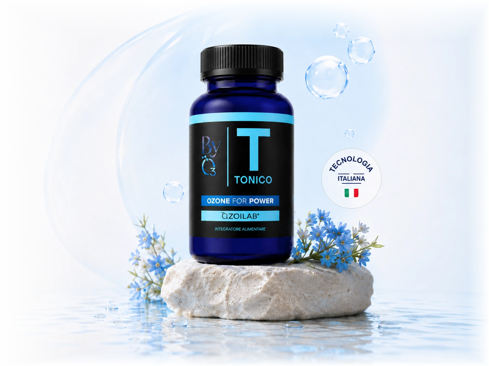
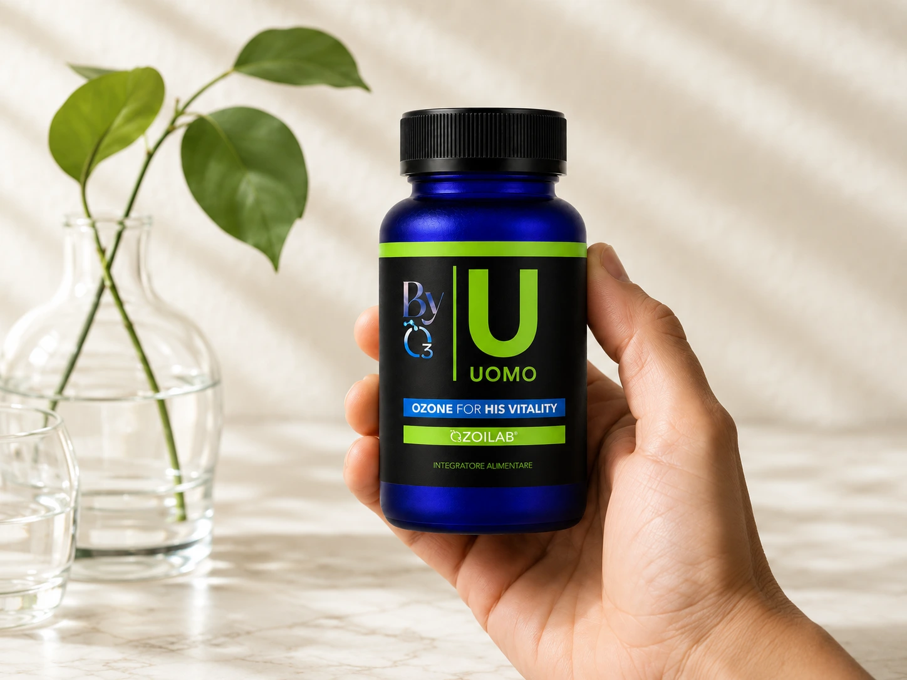
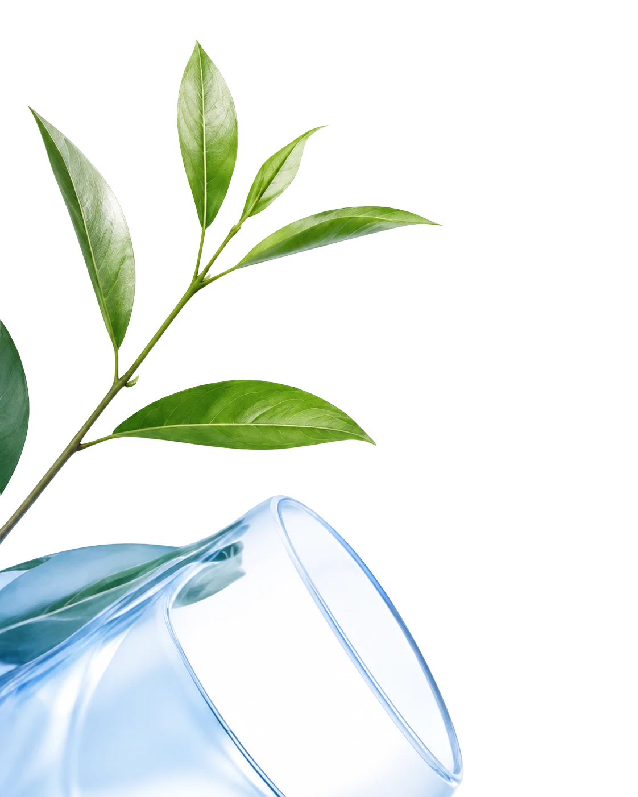

Energia e tono
Tonico
Energia per il corpo e la mente.
Ingredienti chiave
- Attivi OZOILAB®
- Vitamine del gruppo B
- Minerali essenziali
BYO3 | Tecnologia OZOILAB
BYO3 porta OZOILAB in una nuova generazione di integratori con rigore scientifico e semplicità.


BYO3 | Scienza italiana
BYO3 nasce dall'incontro tra ricerca avanzata e formule specifiche. OZOILAB unisce olio di girasole ozonizzato e stabilizzato a ingredienti selezionati per accompagnare la routine.
Scopri la scienzaLinea BYO3
Ogni formula nasce dalla stessa tecnologia OZOILAB e cambia direzione in base alla routine che vuoi sostenere.

Energia e tono
Energia per il corpo e la mente.
Ingredienti chiave
La tecnologia OZOILAB coniuga scienza e vitalità in una capsula pensata per la costanza quotidiana.
Scopri la scienza
Ingredienti puri e scelti per efficacia e sicurezza.
L'olio di girasole ad alto tenore oleico preserva le caratteristiche.
Il processo stabilizza gli attivi e li protegge dall'ossidazione.
Due capsule al giorno per una routine semplice e costante.
Formulazioni avanzate con tecnologia esclusiva.
Biodisponibilità e protezione degli attivi.
Soluzioni pensate per esigenze diverse.
Qualità e tradizione in ogni fase.
Tracciabilità completa delle materie prime.
Ingredienti selezionati con standard elevati.
Oltre 10.000 clienti soddisfatti ★★★★★ 4.8/5
Tonico mi accompagna ogni giorno e mi aiuta a mantenere una routine più costante.
Tonico · 2 capsule al giornoDa quando uso Uomo sento più regolarità nella mia energia quotidiana.
Uomo · routine mattutinaArtiplus è diventato il mio alleato nei periodi in cui voglio restare attivo.
Artiplus · uso continuativoQualche dubbio? Ecco le risposte alle domande più frequenti.
Sono formulati con materie prime selezionate e vanno assunti seguendo le indicazioni in etichetta. In caso di terapie in corso, gravidanza, allattamento o dubbi specifici, chiedi al medico o al nostro esperto.
Le esigenze possono essere complementari, ma le combinazioni vanno valutate con criterio. Per scegliere il prodotto più adatto o associare più formule, parla con l'esperto.
La homepage e pronta per collegarsi a Shopify. La regola commerciale prevista e spedizione gratuita in Italia sopra i 59€.
Non sono indicati in caso di favismo o deficit G6PD. Artiplus contiene pesce. Leggi sempre le avvertenze del prodotto e chiedi un parere professionale se hai condizioni particolari.

Scienza, natura e semplicità per il tuo benessere.